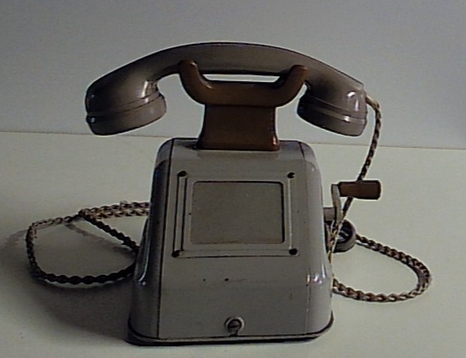
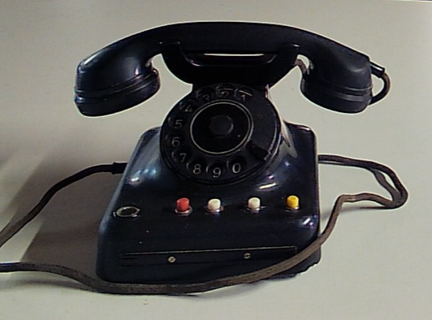
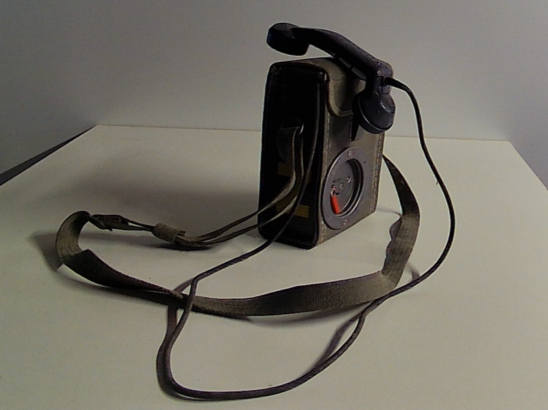
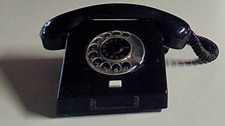

Historische Telefone – Bildgalerie
Alle Geräte sind chronologisch nach Baujahr sortiert. Die Sammlung umfasst OB‑Geräte, Feldtelefone, Industriewandapparate und FeTAp‑Modelle.
1930er Jahre – OB33 (Ortsbatteriebetrieb)

Typ: OB‑Gerät (Ortsbatteriebetrieb)
Modell: OB33
Baujahr: 1930er bis Nachkriegszeit
Hersteller: Deutsche Bundesbahn (DB)
Status: Nicht angeschlossen
1940er–1960er – Reihenapparat (RhAp)

Typ: Reihenapparat (Wandapparat)
Modell: RhAp
Baujahr: 1940er bis 1960er Jahre
Hersteller: Deutsche Reichspost
Status: Nicht angeschlossen
1950er Jahre – FeTAp W28

Typ: Wählapparat
Modell: W28/38
Baujahr: 1950er Jahre
Status: Angeschlossen
1950er–1960er – Feldtelefon 50 (Ftf50)

Typ: Feldfernsprecher (OB‑Gerät, Ortsbatteriebetrieb)
Modell: Ftf50
Baujahr: 1950er bis 1960er Jahre
Hersteller: Albiswerk Zürich AG
Status: Nicht angeschlossen
1955 – FeTAp W48

Typ: Wählapparat W48
Modell: W48
Baujahr: Februar 1955
Status: Angeschlossen
1962 – DDR W58

Typ: Wählapparat
Modell: W58
Baujahr: 1962
Hersteller: VEB Fernmeldewerk Nordhausen
Status: Nicht angeschlossen
1970er Jahre – DDR Industriewandfernsprecher IFW/W

Typ: Industriewandfernsprecher
Modell: IFW/W
Baujahr: 1970er Jahre
Hersteller: VEB Apparatebau Caputh
Status: Nicht angeschlossen
1971 – FeTAp 611‑2

Typ: FeTAp 611‑2
Modell: 611‑2
Baujahr: Mai 1971
Status: Nicht angeschlossen
1972 – FeTAp Te100

Typ: FeTAp Te100
Modell: Te100
Baujahr: November 1972
Status: Nicht angeschlossen
1977 – FeTAp 612

Typ: FeTAp 612
Modell: 612
Baujahr: 1977
Status: Nicht angeschlossen
1979 – FeTAp 611‑1a

Typ: FeTAp 611‑1a
Modell: 611‑1a
Baujahr: November 1979
Status: Nicht angeschlossen
1980er Jahre – FeTAp Masterset

Typ: FeTAp Masterset
Modell: Masterset
Baujahr: 1980er Jahre
Status: Nicht angeschlossen
1982 – FeTAp 612‑21

Typ: Fernmeldetischapparat (FeTAp)
Modell: 612‑21
Baujahr: November 1982
Status: Angeschlossen
1986 – FeTAp 791‑1

Typ: FeTAp 791‑1
Modell: 791‑1
Baujahr: Dezember 1986
Status: Nicht angeschlossen
1988 – Bundeswehr Feldfernsprecher Modell 54 OB/ZB

Typ: Feldfernsprecher mit Amtszusatz
Modell: 54 OB/ZB
Baujahr: August 1988
Status: Angeschlossen
1988 – FeTAp 795‑1

Typ: FeTAp 795‑1
Modell: 795‑1
Baujahr: Oktober 1988
Status: Nicht angeschlossen
1989 – FeTAp Tel 0164

Typ: FeTAp Tel 0164
Modell: Tel 0164
Baujahr: Juni 1989
Status: Nicht angeschlossen
1989 – FeTAp 2L‑752‑1

Typ: FeTAp 2L‑752‑1
Modell: 2L‑752‑1
Baujahr: August 1989
Status: Nicht angeschlossen
1991 – FeTAp Tel 0164 LX

Typ: FeTAp Tel 0164 LX
Modell: Tel 0164 LX
Baujahr: Februar 1991
Status: Nicht angeschlossen
1991 – FeTAp SEL1026

Typ: FeTAp SEL1026
Modell: SEL1026
Baujahr: Oktober 1991
Status: Nicht angeschlossen